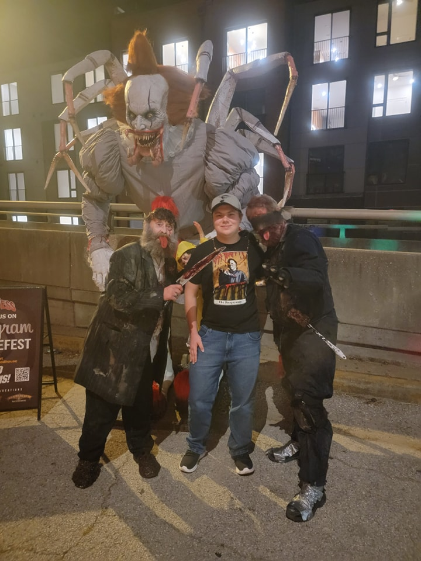
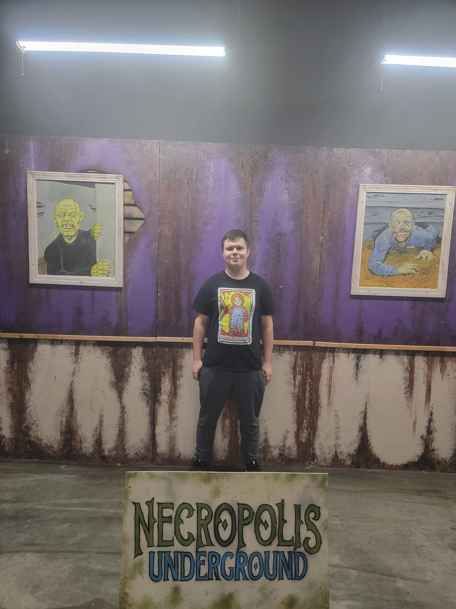
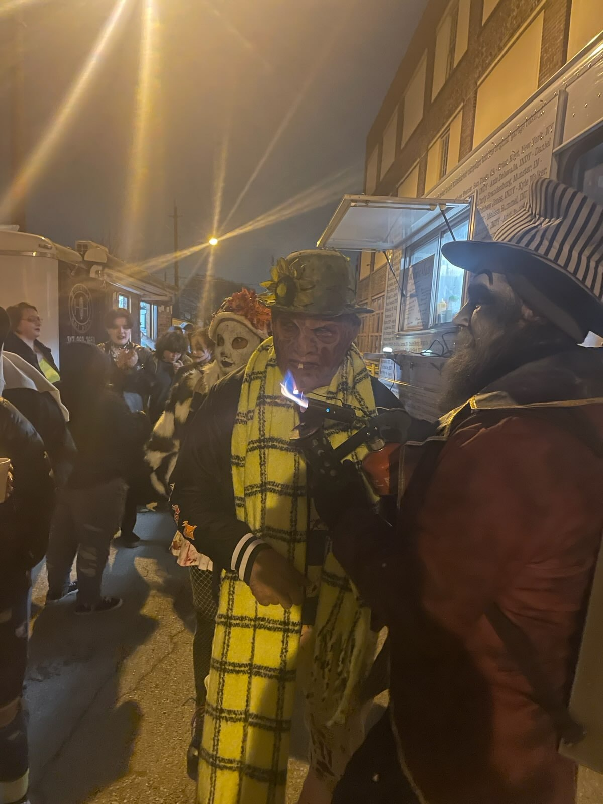

The Darkness® (St Louis, MO)
" We visited The Darkness in dowtown St Louis for their annual 'My Bloody Valentine' event. This delights haunt fans in the area as it affords an opprotunity to visit a haunt during off season. I'm not typically a fan of Darkness but it was worth it to see Scary Gary, an icon there for the last 30 years."
Necropolis Underground® (Indianapolis, IN)
"The next haunt we visited was a little over 4 hours away. Necropolis decided to host the 'Halfway to Haunt Season' event for people in the haunt industry. Though this was not a highly publicized event, it was still a packed house. The haunt features 3 houses, an escape room, and arcade."
The Beast® & Macabre Cinema® (KC, MO)
"The Beast in Kansas City is one of the top rated haunts in the nation. Not sure why, but sadly it is. It's claim to fame is the two-story jump out of a window to exit. For those who are unwillling to make the jump, there is a 4-story slide used to exit. I personally found the haunt to be too dim to enjoy and the pushed people through continously which did not allow for many scares. We also visited Macabre Cinema as part of a combo deal and that was by far one of the best of the year! Every room was themed around well known horror movies with hidden exits in many of the rooms."
Terror on Route 66® (Sullivan, MO)
"Terror on Route 66 is truly a hidden secret. This is a 'touch allowed' haunt so the actors are allowed to touch you as part of the scare experience. We were shoved along, squirted with water guns, and seperated fromm our group. This creates a unique experience."
Nightmare on Edgewood® (Indianapolis, IN)
" This venue was the perfect place to host last year's 'Monster Bash', an annual event to celebrate the season for haunts nationwide. With three haunts, a stage, and mechanical bull made this full contact house a fan favorite. Inside the massive haunt we were seperated from our group often and made to climb/crawl our way to safety. The smaller production was by far the best scare of the season and I am looking forward to attending during regular season"